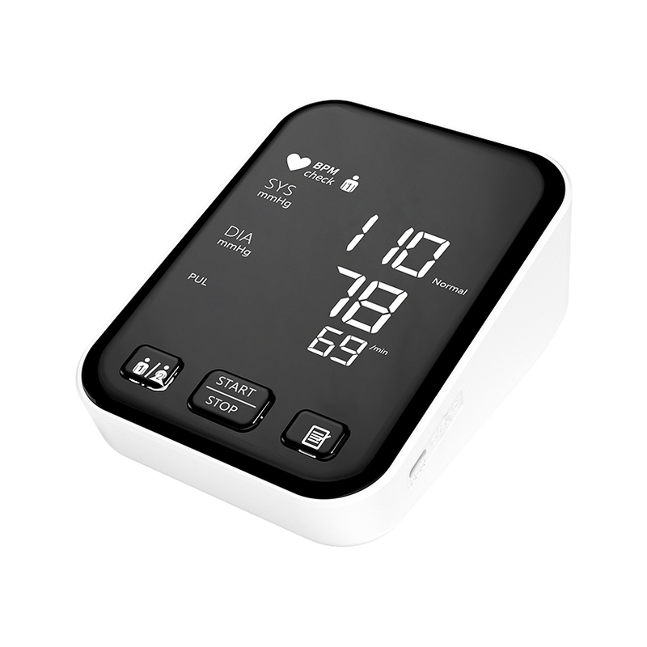
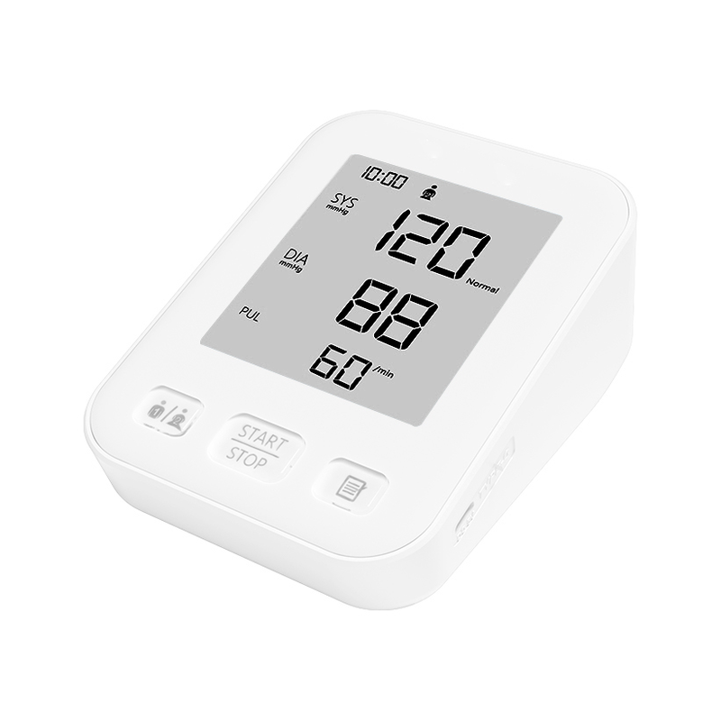
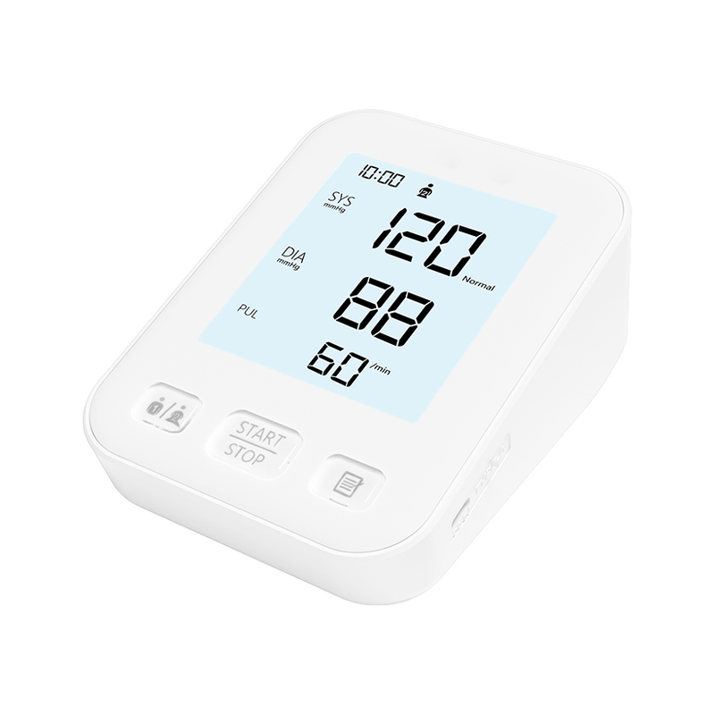

UPPER-ARM
YP7101
LED display
Voice readout · 2 × 120 memory
Explore upper-arm models, compare display configurations and review cuff options for your OEM/ODM project.

Choose an LED, LCD or backlit LCD display. Select a model to review its specifications.
LED display
Voice readout · 2 × 120 memory

LCD display
Voice readout · 2 × 120 memory

Backlit LCD display
Voice readout · 2 × 120 memory
| Specification | Details |
|---|
Share your preferred model, cuff size, branding and packaging requirements with our team.
Tell us your target market, preferred model and cuff requirements.